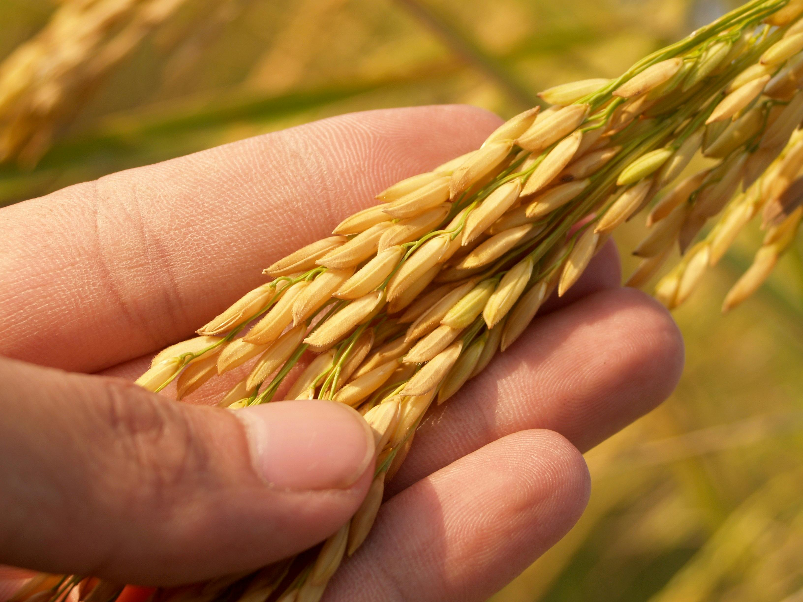
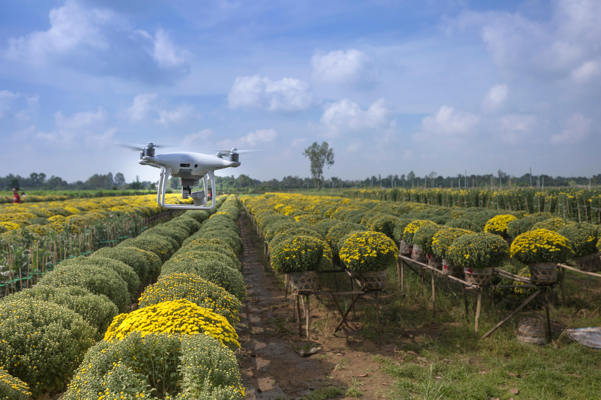

.JPG)

"Farming" redirects here. For other uses, see Farming (disambiguation). This article is about agriculture for humans. For agriculture for ants, see Agriculture in ants.
Agriculture encompasses crop and livestock production, aquaculture, and forestry for food and non-food products.[1] Agriculture was a key factor in the rise of sedentary human civilization, whereby farming of domesticated species created food surpluses that enabled people to live in cities. While humans started gathering grains at least 105,000 years ago, nascent farmers only began planting them around 11,500 years ago. Sheep, goats, pigs, and cattle were domesticated around 10,000 years ago. Plants were independently cultivated in at least 11 regions of the world. In the 20th century, industrial agriculture based on large-scale monocultures came to dominate agricultural output. As of 2021, small farms produce about one-third of the world's food, but large farms are prevalent.[2] The largest 1% of farms in the world are greater than 50 hectares (120 acres) and operate more than 70% of the world's farmland.[2] Nearly 40% of agricultural land is found on farms larger than 1,000 hectares (2,500 acres).[2] However, five of every six farms in the world consist of fewer than 2 hectares (4.9 acres), and take up only around 12% of all agricultural land.[2] Farms and farming greatly influence rural economics and greatly shape rural society, effecting both the direct agricultural workforce and broader businesses that support the farms and farming populations. The major agricultural products can be broadly grouped into foods, fibers, fuels, and raw materials (such as rubber). Food classes include cereals (grains), vegetables, fruits, cooking oils, meat, milk, eggs, and fungi. Global agricultural production amounts to approximately 11 billion tonnes of food,[3] 32 million tonnes of natural fibers[4] and 4 billion m3 of wood.[5] However, around 14% of the world's food is lost from production before reaching the retail level.[6] Modern agronomy, plant breeding, agrochemicals such as pesticides and fertilizers, and technological developments have sharply increased crop yields, but also contributed to ecological and environmental damage. Selective breeding and modern practices in animal husbandry have similarly increased the output of meat, but have raised concerns about animal welfare and environmental damage. Environmental issues include contributions to climate change, depletion of aquifers, deforestation, antibiotic resistance, and other agricultural pollution. Agriculture is both a cause of and sensitive to environmental degradation, such as biodiversity loss, desertification, soil degradation, and climate change, all of which can cause decreases in crop yield. Genetically modified organisms are widely used, although some countries ban them.
Further information:Horticulture § Scope
The word agriculture is a late Middle English adaptation of Latin agricultūra, from ager 'field' and cultūra 'cultivation' or 'growing'.[7] While agriculture usually refers to human activities, certain species of ant,[8][9] termite and beetle have been cultivating crops for up to 60 million years.[10] Agriculture is defined with varying scopes, in its broadest sense using natural resources to "produce commodities which maintain life, including food, fiber, forest products, horticultural crops, and their related services".[11] Thus defined, it includes arable farming, horticulture, animal husbandry and forestry, but horticulture and forestry are in practice often excluded.[11] It may also be broadly decomposed into plant agriculture, which concerns the cultivation of useful plants,[12] and animal agriculture, the production of agricultural animals.[13]

Winnowing grain in Ethiopia.
Main article:History of agriculture
Main article:Neolithic Revolution
The development of agriculture enabled the human population to grow many times larger than could be sustained by hunting and gathering.[16] Agriculture began independently in different parts of the globe,[17] and included a diverse range of taxa, in at least 11 separate centers of origin.[14] Wild grains were collected and eaten from at least 105,000 years ago.[18] In the Paleolithic Levant, 23,000 years ago, cereals cultivation of emmer, barley, and oats has been observed near the sea of Galilee.[19][20] Rice was domesticated in China between 11,500 and 6,200 BC with the earliest known cultivation from 5,700 BC,[21] followed by mung, soy and azuki beans. Sheep were domesticated in Mesopotamia between 13,000 and 11,000 years ago.[22] Cattle were domesticated from the wild aurochs in the areas of modern Turkey and Pakistan some 10,500 years ago.[23] Pig production emerged in Eurasia, including Europe, East Asia and Southwest Asia,[24] where wild boar were first domesticated about 10,500 years ago.[25] In the Andes of South America, the potato was domesticated between 10,000 and 7,000 years ago, along with beans, coca, llamas, alpacas, and guinea pigs. Sugarcane and some root vegetables were domesticated in New Guinea around 9,000 years ago. Sorghum was domesticated in the Sahel region of Africa by 7,000 years ago. Cotton was domesticated in Peru by 5,600 years ago,[26] and was independently domesticated in Eurasia. In Mesoamerica, wild teosinte was bred into maize (corn) from 10,000 to 6,000 years ago.[27][28][29] The horse was domesticated in the Eurasian Steppes around 3500 BC.[30] Scholars have offered multiple hypotheses to explain the historical origins of agriculture. Studies of the transition from hunter-gatherer to agricultural societies indicate an initial period of intensification and increasing sedentism; examples are the Natufian culture in the Levant, and the Early Chinese Neolithic in China. Then, wild stands that had previously been harvested started to be planted, and gradually came to be domesticated.[31][32][33]
Centres of origin, as numbered by Nikolai Vavilov in the 1930s.
Area 3 is no longer recognised as a centre of origin
New Guinea (area P) was identified more recently. [14][15]

Agricultural preparation of soil by mechanical agitation of various types, such as digging overturning.

A usually large group of plants and especially trees under cultivation.

the seed of a semi-aquatic grass (Oryza sativa) that is cultivated warm climates in many countries.